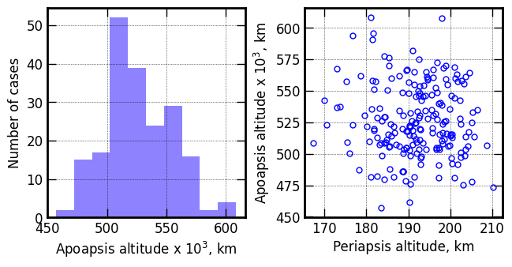
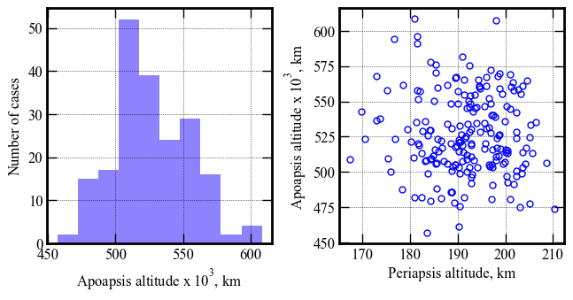
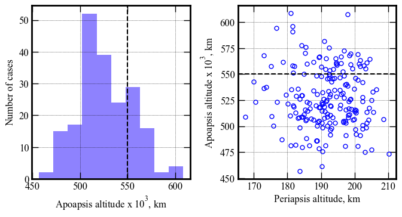
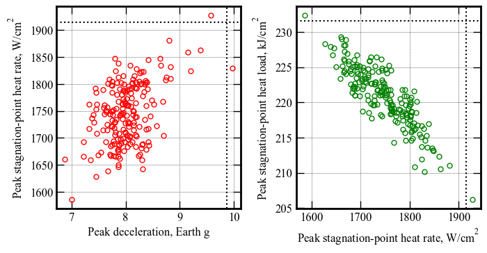
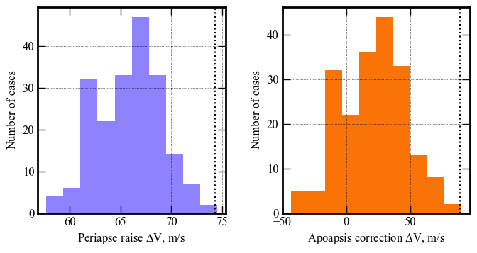

Section 08 - Performance Analysis - F - higher lift-to-drag ratio¶
[1]:
from AMAT.planet import Planet
from AMAT.vehicle import Vehicle
[2]:
import numpy as np
import matplotlib.pyplot as plt
[3]:
planet = Planet('URANUS')
planet.loadAtmosphereModel('../../../atmdata/Uranus/uranus-gram-avg.dat', 0 , 1 ,2, 3, heightInKmFlag=True)
planet.h_skip = 1000.0E3
planet.h_low = 120e3
planet.h_trap = 100e3
[24]:
vehicle=Vehicle('Titania', 3200.0, 146 , 0.24, np.pi*4.5**2.0, 0.0, 1.125, planet)
vehicle.setInitialState(1000.0,-15.22,75.55,29.2877,88.687,-11.7 ,0.0,0.0)
vehicle.setSolverParams(1E-6)
# Set the guidance parameters described in the paper.
# See the function description for parameter details.
# Set max roll rate constraint to 30 deg/s
vehicle.setMaxRollRate(30.0)
# Set Ghdot = 83
# Set Gq = 9.0
# Set v_switch_kms = 16.0 :: this parameter is not really used, and should just be set to low value
# Set low_Alt_km = 120
# Set numPoints_lowAlt = 101
# Set hdot_threshold = -500 m/s
vehicle.setEquilibriumGlideParams(83.0, 9.0, 16.0, 120.0, 101, -500.0)
# Set target orbit parameters
# periapsis = 4000.0 km
# apoapsis = 550,000 km :: set slightly above target (500e3) to account for bias in targeting algorithm
# apoapsis tolerance = 10 km
vehicle.setTargetOrbitParams(4000.0, 550.0E3, 10.0E3)
[25]:
# Set path to atmfiles with randomly perturbed atmosphere files.
atmfiles = ['../../../atmdata/Uranus/perturbed/G-01.txt',
'../../../atmdata/Uranus/perturbed/G-02.txt',
'../../../atmdata/Uranus/perturbed/G-03.txt',
'../../../atmdata/Uranus/perturbed/G-04.txt',
'../../../atmdata/Uranus/perturbed/G-05.txt']
[26]:
vehicle.setupMonteCarloSimulation(1201, 200, atmfiles, 0, 1, 2, 3, 4, True, \
-11.70, 0.10, 0.30, 0.013, 0.5, 0.1, 2400.0)
Small run N = 200¶
[27]:
vehicle.runMonteCarlo2(200, '../../../data/acta-astronautica/uranus-orbiter-probe/MCBXF')
RUN #: 1, SAMPLE #: 79, EFPA: -11.67, SIGMA: 0.75, LD: 0.30, APO : 511456.39
RUN #: 2, SAMPLE #: 154, EFPA: -11.83, SIGMA: 0.17, LD: 0.30, APO : 509239.28
RUN #: 3, SAMPLE #: 4, EFPA: -11.68, SIGMA: -0.47, LD: 0.30, APO : 511362.47
RUN #: 4, SAMPLE #: 137, EFPA: -11.77, SIGMA: 1.76, LD: 0.27, APO : 561003.54
RUN #: 5, SAMPLE #: 20, EFPA: -11.57, SIGMA: 1.76, LD: 0.33, APO : 564622.46
RUN #: 6, SAMPLE #: 151, EFPA: -11.75, SIGMA: -0.91, LD: 0.31, APO : 512058.49
RUN #: 7, SAMPLE #: 22, EFPA: -11.65, SIGMA: -0.27, LD: 0.33, APO : 557710.75
RUN #: 8, SAMPLE #: 108, EFPA: -11.89, SIGMA: 0.02, LD: 0.29, APO : 506407.13
RUN #: 9, SAMPLE #: 28, EFPA: -11.63, SIGMA: -0.09, LD: 0.31, APO : 572561.24
RUN #: 10, SAMPLE #: 35, EFPA: -11.69, SIGMA: -0.07, LD: 0.29, APO : 548434.08
RUN #: 11, SAMPLE #: 116, EFPA: -11.69, SIGMA: 0.47, LD: 0.29, APO : 507496.80
RUN #: 12, SAMPLE #: 47, EFPA: -11.55, SIGMA: 0.71, LD: 0.29, APO : 477703.78
RUN #: 13, SAMPLE #: 161, EFPA: -11.75, SIGMA: -1.04, LD: 0.30, APO : 514570.62
RUN #: 14, SAMPLE #: 156, EFPA: -11.78, SIGMA: -0.94, LD: 0.29, APO : 525046.90
RUN #: 15, SAMPLE #: 163, EFPA: -11.70, SIGMA: 0.80, LD: 0.29, APO : 540022.50
RUN #: 16, SAMPLE #: 99, EFPA: -11.54, SIGMA: 1.40, LD: 0.30, APO : 568996.09
RUN #: 17, SAMPLE #: 84, EFPA: -11.89, SIGMA: 1.54, LD: 0.29, APO : 566945.18
RUN #: 18, SAMPLE #: 124, EFPA: -11.67, SIGMA: -2.18, LD: 0.30, APO : 500441.08
RUN #: 19, SAMPLE #: 165, EFPA: -11.74, SIGMA: 2.40, LD: 0.30, APO : 503455.18
RUN #: 20, SAMPLE #: 24, EFPA: -11.59, SIGMA: -0.62, LD: 0.31, APO : 555124.70
RUN #: 21, SAMPLE #: 110, EFPA: -11.78, SIGMA: 1.77, LD: 0.29, APO : 513696.48
RUN #: 22, SAMPLE #: 105, EFPA: -11.84, SIGMA: -0.12, LD: 0.29, APO : 553921.15
RUN #: 23, SAMPLE #: 123, EFPA: -11.84, SIGMA: -0.70, LD: 0.30, APO : 519935.50
RUN #: 24, SAMPLE #: 119, EFPA: -11.61, SIGMA: -0.22, LD: 0.30, APO : 481671.07
RUN #: 25, SAMPLE #: 63, EFPA: -11.64, SIGMA: 0.65, LD: 0.29, APO : 554851.69
RUN #: 26, SAMPLE #: 41, EFPA: -11.55, SIGMA: -1.21, LD: 0.31, APO : 567088.38
RUN #: 27, SAMPLE #: 19, EFPA: -11.61, SIGMA: -0.97, LD: 0.34, APO : 505559.77
RUN #: 28, SAMPLE #: 111, EFPA: -11.91, SIGMA: -0.11, LD: 0.30, APO : 551330.66
RUN #: 29, SAMPLE #: 132, EFPA: -11.60, SIGMA: -1.06, LD: 0.34, APO : 497967.37
RUN #: 30, SAMPLE #: 79, EFPA: -11.80, SIGMA: 0.08, LD: 0.30, APO : 506056.48
RUN #: 31, SAMPLE #: 161, EFPA: -11.59, SIGMA: -0.91, LD: 0.30, APO : 523934.88
RUN #: 32, SAMPLE #: 80, EFPA: -11.89, SIGMA: 0.10, LD: 0.31, APO : 530431.48
RUN #: 33, SAMPLE #: 58, EFPA: -11.60, SIGMA: -1.97, LD: 0.30, APO : 503626.26
RUN #: 34, SAMPLE #: 16, EFPA: -11.65, SIGMA: -0.60, LD: 0.29, APO : 491961.25
RUN #: 35, SAMPLE #: 40, EFPA: -11.76, SIGMA: 0.01, LD: 0.29, APO : 523435.75
RUN #: 36, SAMPLE #: 176, EFPA: -11.61, SIGMA: 1.68, LD: 0.32, APO : 503516.49
RUN #: 37, SAMPLE #: 137, EFPA: -11.61, SIGMA: -0.05, LD: 0.31, APO : 542441.55
RUN #: 38, SAMPLE #: 63, EFPA: -11.70, SIGMA: 0.95, LD: 0.32, APO : 506578.71
RUN #: 39, SAMPLE #: 186, EFPA: -11.81, SIGMA: -0.14, LD: 0.31, APO : 481529.29
RUN #: 40, SAMPLE #: 62, EFPA: -11.70, SIGMA: -2.28, LD: 0.31, APO : 537574.89
RUN #: 41, SAMPLE #: 125, EFPA: -11.72, SIGMA: 0.68, LD: 0.29, APO : 531813.24
RUN #: 42, SAMPLE #: 111, EFPA: -11.60, SIGMA: 0.32, LD: 0.31, APO : 515564.51
RUN #: 43, SAMPLE #: 24, EFPA: -11.76, SIGMA: -0.77, LD: 0.29, APO : 520985.36
RUN #: 44, SAMPLE #: 180, EFPA: -11.62, SIGMA: 0.02, LD: 0.32, APO : 555582.97
RUN #: 45, SAMPLE #: 156, EFPA: -11.65, SIGMA: -1.39, LD: 0.28, APO : 546651.52
RUN #: 46, SAMPLE #: 32, EFPA: -11.66, SIGMA: 0.21, LD: 0.29, APO : 507666.17
RUN #: 47, SAMPLE #: 26, EFPA: -11.76, SIGMA: -0.06, LD: 0.31, APO : 581790.84
RUN #: 48, SAMPLE #: 190, EFPA: -11.67, SIGMA: 1.61, LD: 0.28, APO : 607591.09
RUN #: 49, SAMPLE #: 174, EFPA: -11.74, SIGMA: -0.24, LD: 0.31, APO : 524032.77
RUN #: 50, SAMPLE #: 191, EFPA: -11.75, SIGMA: -1.42, LD: 0.28, APO : 560167.15
RUN #: 51, SAMPLE #: 140, EFPA: -11.76, SIGMA: 0.55, LD: 0.30, APO : 503438.98
RUN #: 52, SAMPLE #: 15, EFPA: -11.92, SIGMA: -0.16, LD: 0.30, APO : 608470.77
RUN #: 53, SAMPLE #: 122, EFPA: -11.51, SIGMA: -1.24, LD: 0.29, APO : 515705.96
RUN #: 54, SAMPLE #: 6, EFPA: -11.79, SIGMA: -0.17, LD: 0.30, APO : 503660.67
RUN #: 55, SAMPLE #: 138, EFPA: -11.87, SIGMA: -0.16, LD: 0.28, APO : 545578.33
RUN #: 56, SAMPLE #: 20, EFPA: -11.71, SIGMA: 1.64, LD: 0.31, APO : 497301.21
RUN #: 57, SAMPLE #: 197, EFPA: -11.65, SIGMA: 1.05, LD: 0.32, APO : 568037.29
RUN #: 58, SAMPLE #: 91, EFPA: -11.68, SIGMA: -1.21, LD: 0.32, APO : 566453.22
RUN #: 59, SAMPLE #: 74, EFPA: -11.60, SIGMA: -0.64, LD: 0.30, APO : 558112.70
RUN #: 60, SAMPLE #: 44, EFPA: -11.71, SIGMA: -0.43, LD: 0.31, APO : 546357.68
RUN #: 61, SAMPLE #: 25, EFPA: -11.87, SIGMA: -0.08, LD: 0.30, APO : 508928.92
RUN #: 62, SAMPLE #: 162, EFPA: -11.62, SIGMA: -0.33, LD: 0.29, APO : 530459.42
RUN #: 63, SAMPLE #: 112, EFPA: -11.68, SIGMA: -1.92, LD: 0.29, APO : 523131.49
RUN #: 64, SAMPLE #: 8, EFPA: -11.73, SIGMA: -0.99, LD: 0.30, APO : 500562.13
RUN #: 65, SAMPLE #: 163, EFPA: -11.76, SIGMA: -0.12, LD: 0.31, APO : 475842.59
RUN #: 66, SAMPLE #: 119, EFPA: -11.56, SIGMA: -0.91, LD: 0.32, APO : 550456.28
RUN #: 67, SAMPLE #: 30, EFPA: -11.65, SIGMA: 0.14, LD: 0.30, APO : 548208.24
RUN #: 68, SAMPLE #: 84, EFPA: -11.62, SIGMA: 0.22, LD: 0.30, APO : 548701.65
RUN #: 69, SAMPLE #: 149, EFPA: -11.62, SIGMA: -1.67, LD: 0.30, APO : 513096.63
RUN #: 70, SAMPLE #: 140, EFPA: -11.73, SIGMA: -1.06, LD: 0.30, APO : 521619.96
RUN #: 71, SAMPLE #: 132, EFPA: -11.78, SIGMA: 0.63, LD: 0.30, APO : 490990.56
RUN #: 72, SAMPLE #: 27, EFPA: -11.55, SIGMA: -0.40, LD: 0.32, APO : 546200.72
RUN #: 73, SAMPLE #: 187, EFPA: -11.63, SIGMA: 0.34, LD: 0.30, APO : 506854.46
RUN #: 74, SAMPLE #: 146, EFPA: -11.64, SIGMA: 0.13, LD: 0.31, APO : 503157.62
RUN #: 75, SAMPLE #: 33, EFPA: -11.78, SIGMA: -0.87, LD: 0.32, APO : 535943.04
RUN #: 76, SAMPLE #: 135, EFPA: -11.87, SIGMA: -0.33, LD: 0.30, APO : 534190.47
RUN #: 77, SAMPLE #: 56, EFPA: -11.62, SIGMA: -1.09, LD: 0.32, APO : 590780.25
RUN #: 78, SAMPLE #: 87, EFPA: -11.53, SIGMA: -0.12, LD: 0.29, APO : 517972.98
RUN #: 79, SAMPLE #: 23, EFPA: -11.61, SIGMA: 0.99, LD: 0.33, APO : 534500.23
RUN #: 80, SAMPLE #: 70, EFPA: -11.86, SIGMA: -0.12, LD: 0.30, APO : 456945.95
RUN #: 81, SAMPLE #: 26, EFPA: -11.73, SIGMA: 0.11, LD: 0.31, APO : 509186.03
RUN #: 82, SAMPLE #: 176, EFPA: -11.68, SIGMA: -0.18, LD: 0.32, APO : 520015.09
RUN #: 83, SAMPLE #: 68, EFPA: -11.78, SIGMA: 2.13, LD: 0.30, APO : 516389.04
RUN #: 84, SAMPLE #: 86, EFPA: -11.64, SIGMA: 1.01, LD: 0.29, APO : 523899.98
RUN #: 85, SAMPLE #: 95, EFPA: -11.59, SIGMA: 0.83, LD: 0.31, APO : 560821.31
RUN #: 86, SAMPLE #: 11, EFPA: -11.77, SIGMA: 0.27, LD: 0.30, APO : 534705.95
RUN #: 87, SAMPLE #: 92, EFPA: -11.76, SIGMA: 0.46, LD: 0.30, APO : 525550.79
RUN #: 88, SAMPLE #: 182, EFPA: -11.76, SIGMA: -0.82, LD: 0.30, APO : 498818.55
RUN #: 89, SAMPLE #: 55, EFPA: -11.68, SIGMA: 0.88, LD: 0.28, APO : 533227.57
RUN #: 90, SAMPLE #: 102, EFPA: -11.69, SIGMA: -0.20, LD: 0.29, APO : 510168.76
RUN #: 91, SAMPLE #: 44, EFPA: -11.49, SIGMA: 2.05, LD: 0.30, APO : 505900.42
RUN #: 92, SAMPLE #: 62, EFPA: -11.54, SIGMA: 0.61, LD: 0.30, APO : 528577.80
RUN #: 93, SAMPLE #: 148, EFPA: -11.70, SIGMA: -1.23, LD: 0.32, APO : 485969.72
RUN #: 94, SAMPLE #: 121, EFPA: -11.67, SIGMA: 1.28, LD: 0.31, APO : 475220.31
RUN #: 95, SAMPLE #: 175, EFPA: -11.82, SIGMA: -0.25, LD: 0.30, APO : 526088.77
RUN #: 96, SAMPLE #: 1, EFPA: -11.69, SIGMA: -0.53, LD: 0.29, APO : 567826.63
RUN #: 97, SAMPLE #: 156, EFPA: -11.65, SIGMA: 0.57, LD: 0.31, APO : 545404.94
RUN #: 98, SAMPLE #: 166, EFPA: -11.56, SIGMA: -0.52, LD: 0.33, APO : 554610.92
RUN #: 99, SAMPLE #: 115, EFPA: -11.77, SIGMA: -0.48, LD: 0.29, APO : 521766.47
RUN #: 100, SAMPLE #: 125, EFPA: -11.77, SIGMA: -0.68, LD: 0.29, APO : 523317.96
RUN #: 101, SAMPLE #: 19, EFPA: -11.56, SIGMA: -1.22, LD: 0.29, APO : 478444.63
RUN #: 102, SAMPLE #: 19, EFPA: -11.61, SIGMA: 0.47, LD: 0.29, APO : 505995.31
RUN #: 103, SAMPLE #: 178, EFPA: -11.76, SIGMA: -2.10, LD: 0.30, APO : 542703.21
RUN #: 104, SAMPLE #: 17, EFPA: -11.69, SIGMA: -1.11, LD: 0.30, APO : 594109.97
RUN #: 105, SAMPLE #: 82, EFPA: -11.64, SIGMA: -0.34, LD: 0.31, APO : 530694.49
RUN #: 106, SAMPLE #: 183, EFPA: -11.65, SIGMA: -0.91, LD: 0.31, APO : 536651.86
RUN #: 107, SAMPLE #: 105, EFPA: -11.70, SIGMA: 0.24, LD: 0.30, APO : 492368.06
RUN #: 108, SAMPLE #: 29, EFPA: -11.70, SIGMA: 0.79, LD: 0.28, APO : 528085.67
RUN #: 109, SAMPLE #: 79, EFPA: -11.54, SIGMA: 0.47, LD: 0.32, APO : 515337.81
RUN #: 110, SAMPLE #: 110, EFPA: -11.71, SIGMA: -0.68, LD: 0.32, APO : 545941.13
RUN #: 111, SAMPLE #: 145, EFPA: -11.76, SIGMA: 1.35, LD: 0.29, APO : 504970.95
RUN #: 112, SAMPLE #: 35, EFPA: -11.87, SIGMA: 1.06, LD: 0.30, APO : 518844.64
RUN #: 113, SAMPLE #: 169, EFPA: -11.46, SIGMA: -1.01, LD: 0.31, APO : 513162.41
RUN #: 114, SAMPLE #: 117, EFPA: -11.80, SIGMA: -0.84, LD: 0.31, APO : 557044.26
RUN #: 115, SAMPLE #: 67, EFPA: -11.65, SIGMA: 1.09, LD: 0.28, APO : 519154.60
RUN #: 116, SAMPLE #: 101, EFPA: -11.73, SIGMA: 1.64, LD: 0.31, APO : 569844.13
RUN #: 117, SAMPLE #: 185, EFPA: -11.67, SIGMA: 0.36, LD: 0.29, APO : 510725.39
RUN #: 118, SAMPLE #: 20, EFPA: -11.68, SIGMA: 1.94, LD: 0.30, APO : 561244.81
RUN #: 119, SAMPLE #: 61, EFPA: -11.71, SIGMA: -1.75, LD: 0.29, APO : 530781.73
RUN #: 120, SAMPLE #: 61, EFPA: -11.61, SIGMA: -0.52, LD: 0.29, APO : 570335.83
RUN #: 121, SAMPLE #: 1, EFPA: -11.76, SIGMA: -0.10, LD: 0.30, APO : 557688.19
RUN #: 122, SAMPLE #: 19, EFPA: -11.70, SIGMA: -1.18, LD: 0.29, APO : 576198.04
RUN #: 123, SAMPLE #: 31, EFPA: -11.70, SIGMA: 1.67, LD: 0.31, APO : 513546.47
RUN #: 124, SAMPLE #: 114, EFPA: -11.73, SIGMA: -0.38, LD: 0.30, APO : 595938.73
RUN #: 125, SAMPLE #: 84, EFPA: -11.62, SIGMA: 0.66, LD: 0.29, APO : 526443.88
RUN #: 126, SAMPLE #: 13, EFPA: -11.77, SIGMA: -1.06, LD: 0.30, APO : 508926.61
RUN #: 127, SAMPLE #: 64, EFPA: -11.63, SIGMA: 1.30, LD: 0.30, APO : 516912.45
RUN #: 128, SAMPLE #: 20, EFPA: -11.54, SIGMA: -0.79, LD: 0.30, APO : 514599.18
RUN #: 129, SAMPLE #: 166, EFPA: -11.78, SIGMA: 1.19, LD: 0.29, APO : 527472.19
RUN #: 130, SAMPLE #: 81, EFPA: -11.92, SIGMA: -0.07, LD: 0.31, APO : 577849.41
RUN #: 131, SAMPLE #: 123, EFPA: -11.71, SIGMA: 0.35, LD: 0.29, APO : 514038.96
RUN #: 132, SAMPLE #: 97, EFPA: -11.77, SIGMA: -0.03, LD: 0.31, APO : 522544.13
RUN #: 133, SAMPLE #: 70, EFPA: -11.76, SIGMA: -0.83, LD: 0.29, APO : 529611.39
RUN #: 134, SAMPLE #: 163, EFPA: -11.89, SIGMA: 1.29, LD: 0.28, APO : 561643.65
RUN #: 135, SAMPLE #: 40, EFPA: -11.69, SIGMA: -0.18, LD: 0.31, APO : 508200.83
RUN #: 136, SAMPLE #: 103, EFPA: -11.77, SIGMA: -1.12, LD: 0.30, APO : 498821.70
RUN #: 137, SAMPLE #: 190, EFPA: -11.77, SIGMA: 1.23, LD: 0.31, APO : 528294.14
RUN #: 138, SAMPLE #: 51, EFPA: -11.85, SIGMA: -0.81, LD: 0.29, APO : 487372.94
RUN #: 139, SAMPLE #: 190, EFPA: -11.47, SIGMA: -1.47, LD: 0.31, APO : 509322.67
RUN #: 140, SAMPLE #: 84, EFPA: -11.77, SIGMA: -1.71, LD: 0.29, APO : 542640.03
RUN #: 141, SAMPLE #: 35, EFPA: -11.61, SIGMA: 0.61, LD: 0.31, APO : 505158.61
RUN #: 142, SAMPLE #: 95, EFPA: -11.74, SIGMA: -0.82, LD: 0.29, APO : 521961.84
RUN #: 143, SAMPLE #: 161, EFPA: -11.80, SIGMA: 0.02, LD: 0.29, APO : 516704.72
RUN #: 144, SAMPLE #: 192, EFPA: -11.67, SIGMA: 0.47, LD: 0.28, APO : 480764.15
RUN #: 145, SAMPLE #: 27, EFPA: -11.59, SIGMA: 0.38, LD: 0.32, APO : 563196.49
RUN #: 146, SAMPLE #: 129, EFPA: -11.66, SIGMA: -0.58, LD: 0.30, APO : 575207.73
RUN #: 147, SAMPLE #: 92, EFPA: -11.82, SIGMA: 0.61, LD: 0.29, APO : 526188.06
RUN #: 148, SAMPLE #: 17, EFPA: -11.61, SIGMA: 1.34, LD: 0.31, APO : 480875.98
RUN #: 149, SAMPLE #: 30, EFPA: -11.71, SIGMA: 0.52, LD: 0.29, APO : 510947.90
RUN #: 150, SAMPLE #: 14, EFPA: -11.84, SIGMA: -0.56, LD: 0.29, APO : 528819.26
RUN #: 151, SAMPLE #: 47, EFPA: -11.60, SIGMA: -0.91, LD: 0.32, APO : 558312.50
RUN #: 152, SAMPLE #: 164, EFPA: -11.51, SIGMA: 0.48, LD: 0.28, APO : 535768.47
RUN #: 153, SAMPLE #: 40, EFPA: -11.63, SIGMA: -0.15, LD: 0.30, APO : 473534.52
RUN #: 154, SAMPLE #: 135, EFPA: -11.61, SIGMA: -0.26, LD: 0.31, APO : 548730.01
RUN #: 155, SAMPLE #: 70, EFPA: -11.69, SIGMA: 0.95, LD: 0.28, APO : 540411.42
RUN #: 156, SAMPLE #: 114, EFPA: -11.76, SIGMA: -0.08, LD: 0.28, APO : 565302.36
RUN #: 157, SAMPLE #: 147, EFPA: -11.79, SIGMA: -0.04, LD: 0.31, APO : 559030.46
RUN #: 158, SAMPLE #: 28, EFPA: -11.63, SIGMA: 0.06, LD: 0.31, APO : 552428.69
RUN #: 159, SAMPLE #: 159, EFPA: -11.77, SIGMA: -0.72, LD: 0.31, APO : 505079.14
RUN #: 160, SAMPLE #: 91, EFPA: -11.73, SIGMA: 1.88, LD: 0.31, APO : 491464.32
RUN #: 161, SAMPLE #: 86, EFPA: -11.86, SIGMA: -1.32, LD: 0.29, APO : 481665.59
RUN #: 162, SAMPLE #: 17, EFPA: -11.70, SIGMA: 0.81, LD: 0.28, APO : 517313.23
RUN #: 163, SAMPLE #: 123, EFPA: -11.62, SIGMA: -0.54, LD: 0.31, APO : 516769.38
RUN #: 164, SAMPLE #: 101, EFPA: -11.65, SIGMA: -1.14, LD: 0.30, APO : 488156.88
RUN #: 165, SAMPLE #: 124, EFPA: -11.79, SIGMA: 0.35, LD: 0.30, APO : 508538.91
RUN #: 166, SAMPLE #: 112, EFPA: -11.72, SIGMA: -0.10, LD: 0.32, APO : 507554.29
RUN #: 167, SAMPLE #: 25, EFPA: -11.67, SIGMA: 0.49, LD: 0.32, APO : 485998.16
RUN #: 168, SAMPLE #: 86, EFPA: -11.82, SIGMA: 0.22, LD: 0.31, APO : 518264.99
RUN #: 169, SAMPLE #: 150, EFPA: -11.64, SIGMA: 0.59, LD: 0.31, APO : 503502.06
RUN #: 170, SAMPLE #: 124, EFPA: -11.69, SIGMA: 1.00, LD: 0.31, APO : 524906.21
RUN #: 171, SAMPLE #: 126, EFPA: -11.51, SIGMA: -0.56, LD: 0.28, APO : 461316.37
RUN #: 172, SAMPLE #: 186, EFPA: -11.64, SIGMA: -0.06, LD: 0.31, APO : 498712.28
RUN #: 173, SAMPLE #: 33, EFPA: -11.73, SIGMA: -0.19, LD: 0.32, APO : 518894.70
RUN #: 174, SAMPLE #: 50, EFPA: -11.71, SIGMA: -1.66, LD: 0.30, APO : 561660.81
RUN #: 175, SAMPLE #: 98, EFPA: -11.80, SIGMA: -0.46, LD: 0.29, APO : 479759.49
RUN #: 176, SAMPLE #: 83, EFPA: -11.76, SIGMA: -0.38, LD: 0.32, APO : 496712.68
RUN #: 177, SAMPLE #: 41, EFPA: -11.49, SIGMA: 0.89, LD: 0.29, APO : 535069.99
RUN #: 178, SAMPLE #: 96, EFPA: -11.59, SIGMA: 0.52, LD: 0.29, APO : 559227.49
RUN #: 179, SAMPLE #: 174, EFPA: -11.51, SIGMA: -0.22, LD: 0.31, APO : 544521.62
RUN #: 180, SAMPLE #: 70, EFPA: -11.78, SIGMA: -0.04, LD: 0.29, APO : 519921.40
RUN #: 181, SAMPLE #: 164, EFPA: -11.77, SIGMA: -1.75, LD: 0.30, APO : 559862.69
RUN #: 182, SAMPLE #: 101, EFPA: -11.73, SIGMA: 0.68, LD: 0.31, APO : 514013.23
RUN #: 183, SAMPLE #: 142, EFPA: -11.59, SIGMA: 0.43, LD: 0.30, APO : 560077.04
RUN #: 184, SAMPLE #: 20, EFPA: -11.53, SIGMA: 0.72, LD: 0.31, APO : 500811.20
RUN #: 185, SAMPLE #: 73, EFPA: -11.71, SIGMA: -0.11, LD: 0.30, APO : 550235.47
RUN #: 186, SAMPLE #: 112, EFPA: -11.66, SIGMA: -0.10, LD: 0.29, APO : 565336.80
RUN #: 187, SAMPLE #: 101, EFPA: -11.78, SIGMA: -1.27, LD: 0.29, APO : 529486.06
RUN #: 188, SAMPLE #: 194, EFPA: -11.61, SIGMA: 1.30, LD: 0.30, APO : 538984.88
RUN #: 189, SAMPLE #: 124, EFPA: -11.74, SIGMA: 0.36, LD: 0.28, APO : 557447.13
RUN #: 190, SAMPLE #: 19, EFPA: -11.77, SIGMA: -1.11, LD: 0.29, APO : 485895.13
RUN #: 191, SAMPLE #: 16, EFPA: -11.76, SIGMA: 1.07, LD: 0.29, APO : 533730.53
RUN #: 192, SAMPLE #: 22, EFPA: -11.78, SIGMA: -0.97, LD: 0.31, APO : 482059.77
RUN #: 193, SAMPLE #: 92, EFPA: -11.81, SIGMA: -0.06, LD: 0.31, APO : 508337.43
RUN #: 194, SAMPLE #: 144, EFPA: -11.76, SIGMA: -1.03, LD: 0.30, APO : 535390.61
RUN #: 195, SAMPLE #: 57, EFPA: -11.57, SIGMA: -1.49, LD: 0.30, APO : 500359.57
RUN #: 196, SAMPLE #: 135, EFPA: -11.77, SIGMA: 0.76, LD: 0.29, APO : 532500.70
RUN #: 197, SAMPLE #: 111, EFPA: -11.46, SIGMA: -0.05, LD: 0.29, APO : 520495.91
RUN #: 198, SAMPLE #: 133, EFPA: -11.68, SIGMA: -0.30, LD: 0.32, APO : 505080.64
RUN #: 199, SAMPLE #: 19, EFPA: -11.67, SIGMA: -0.18, LD: 0.29, APO : 496517.85
RUN #: 200, SAMPLE #: 32, EFPA: -11.70, SIGMA: -0.61, LD: 0.30, APO : 515702.96
[3]:
p1 = np.loadtxt('../../../data/acta-astronautica/uranus-orbiter-probe/MCBXF/terminal_periapsis_arr.txt')
x1 = np.loadtxt('../../../data/acta-astronautica/uranus-orbiter-probe/MCBXF/terminal_apoapsis_arr.txt')
y1 = np.loadtxt('../../../data/acta-astronautica/uranus-orbiter-probe/MCBXF/acc_net_g_max_arr.txt')
z1 = np.loadtxt('../../../data/acta-astronautica/uranus-orbiter-probe/MCBXF/q_stag_max_arr.txt')
h1 = np.loadtxt('../../../data/acta-astronautica/uranus-orbiter-probe/MCBXF/heatload_max_arr.txt')
u1 = np.loadtxt('../../../data/acta-astronautica/uranus-orbiter-probe/MCBXF/periapsis_raise_DV_arr.txt')
v1 = np.loadtxt('../../../data/acta-astronautica/uranus-orbiter-probe/MCBXF/apoapsis_raise_DV_arr.txt')
[4]:
fig, axes = plt.subplots(1, 2, figsize = (6.5, 3.25))
plt.rc('font',family='Times New Roman')
params = {'mathtext.default': 'regular' }
plt.rcParams.update(params)
fig.tight_layout()
plt.subplots_adjust(wspace=0.30)
axes[0].hist(x1/1000.0, bins=10, color='xkcd:periwinkle')
axes[0].set_xlabel('Apoapsis altitude x '+r'$10^3$'+', km', fontsize=12)
axes[0].set_ylabel('Number of cases', fontsize=12)
axes[0].tick_params(direction='in')
axes[0].yaxis.set_ticks_position('both')
axes[0].xaxis.set_ticks_position('both')
axes[0].tick_params(axis='x',labelsize=12)
axes[0].tick_params(axis='y',labelsize=12)
axes[1].plot(p1, x1/1000.0, 'bo', markersize=5, mfc='None')
axes[1].set_xlabel('Periapsis altitude, km',fontsize=12)
axes[1].set_ylabel('Apoapsis altitude x '+r'$10^3$'+', km', fontsize=12)
axes[1].tick_params(direction='in')
axes[1].yaxis.set_ticks_position('both')
axes[1].xaxis.set_ticks_position('both')
axes[1].tick_params(axis='x',labelsize=12)
axes[1].tick_params(axis='y',labelsize=12)
for ax in axes:
ax.xaxis.set_tick_params(direction='in', which='both')
ax.yaxis.set_tick_params(direction='in', which='both')
ax.xaxis.set_tick_params(width=1, length=8)
ax.yaxis.set_tick_params(width=1, length=8)
ax.xaxis.set_tick_params(width=1, length=6, which='minor')
ax.yaxis.set_tick_params(width=1, length=6, which='minor')
ax.xaxis.grid(which='major', color='k', linestyle='dotted', linewidth=0.5)
ax.xaxis.grid(which='minor', color='k', linestyle='dotted', linewidth=0.0)
ax.yaxis.grid(which='major', color='k', linestyle='dotted', linewidth=0.5)
ax.yaxis.grid(which='minor', color='k', linestyle='dotted', linewidth=0.0)
for axis in ['top', 'bottom', 'left', 'right']:
ax.spines[axis].set_linewidth(2)
plt.show()

Remove cases which did not capture¶
[5]:
del_index1 = np.where(x1 < 0)
del_index1
[5]:
(array([], dtype=int64),)
No cases failed to capture. Nothing to delete.
[32]:
fig, axes = plt.subplots(1, 2, figsize = (6.5, 3.25))
plt.rc('font',family='Times New Roman')
params = {'mathtext.default': 'regular' }
plt.rcParams.update(params)
fig.tight_layout()
plt.subplots_adjust(wspace=0.30)
axes[0].hist(x1/1000.0, bins=10, color='xkcd:periwinkle')
axes[0].set_xlabel('Apoapsis altitude x '+r'$10^3$'+', km', fontsize=12)
axes[0].set_ylabel('Number of cases', fontsize=12)
axes[0].tick_params(direction='in')
axes[0].yaxis.set_ticks_position('both')
axes[0].xaxis.set_ticks_position('both')
axes[0].tick_params(axis='x',labelsize=12)
axes[0].tick_params(axis='y',labelsize=12)
axes[1].plot(p1, x1/1000.0, 'bo', markersize=5, mfc='None')
axes[1].set_xlabel('Periapsis altitude, km',fontsize=12)
axes[1].set_ylabel('Apoapsis altitude x '+r'$10^3$'+', km', fontsize=12)
axes[1].tick_params(direction='in')
axes[1].yaxis.set_ticks_position('both')
axes[1].xaxis.set_ticks_position('both')
axes[1].tick_params(axis='x',labelsize=12)
axes[1].tick_params(axis='y',labelsize=12)
for ax in axes:
ax.xaxis.set_tick_params(direction='in', which='both')
ax.yaxis.set_tick_params(direction='in', which='both')
ax.xaxis.set_tick_params(width=1, length=8)
ax.yaxis.set_tick_params(width=1, length=8)
ax.xaxis.set_tick_params(width=1, length=6, which='minor')
ax.yaxis.set_tick_params(width=1, length=6, which='minor')
ax.xaxis.grid(which='major', color='k', linestyle='dotted', linewidth=0.5)
ax.xaxis.grid(which='minor', color='k', linestyle='dotted', linewidth=0.0)
ax.yaxis.grid(which='major', color='k', linestyle='dotted', linewidth=0.5)
ax.yaxis.grid(which='minor', color='k', linestyle='dotted', linewidth=0.0)
for axis in ['top', 'bottom', 'left', 'right']:
ax.spines[axis].set_linewidth(2)
plt.show()

[33]:
print("--------------------------------------------------------------------------------------------------------")
print("Parameter | Min. 0.13-percentile Mean 99.87-percentile Max")
print("--------------------------------------------------------------------------------------------------------")
print("Apoapsis altitude, km | " + str(round(np.min(x1))) + " " + str(round(np.percentile(x1, 0.13))) +\
" " + str(round(np.average(x1))) +
" " + str(round(np.percentile(x1, 99.87)))+\
" " + str(round(np.max(x1))))
print("Periapsis altitude, km | " + str(round(np.min(p1))) + " " + str(round(np.percentile(p1, 0.13))) +\
" " + str(round(np.average(p1))) +
" " + str(round(np.percentile(p1, 99.87)))+\
" " + str(round(np.max(p1))))
print("Peak deceleration, g | " + str(round(np.min(y1), 2)) + " " + str(round(np.percentile(y1, 0.13), 2)) +\
" " + str(round(np.average(y1), 2)) +
" " + str(round(np.percentile(y1, 99.87), 2))+\
" " + str(round(np.max(y1), 2)))
print("Peak heat rate, W/cm2 | " + str(round(np.min(z1))) + " " + str(round(np.percentile(z1, 0.13))) +\
" " + str(round(np.average(z1))) +
" " + str(round(np.percentile(z1, 99.87)))+\
" " + str(round(np.max(z1))))
print("Peak heat load, kJ/cm2 | " + str(round(np.min(h1))) + " " + str(round(np.percentile(h1, 0.13))) +\
" " + str(round(np.average(h1))) +
" " + str(round(np.percentile(h1, 99.87)))+\
" " + str(round(np.max(h1))))
print("Periapsis raise dV, m/s| " + str(round(np.min(u1), 2)) + " " + str(round(np.percentile(u1, 0.13), 2)) +\
" " + str(round(np.average(u1), 2)) +
" " + str(round(np.percentile(u1, 99.87), 2))+\
" " + str(round(np.max(u1), 2)))
print("Apoapsis corr. dV, m/s | " + str(round(np.min(v1), 2)) + " " + str(round(np.percentile(v1, 0.13), 2)) +\
" " + str(round(np.average(v1), 2)) +
" " + str(round(np.percentile(v1, 99.87), 2))+\
" " + str(round(np.max(v1), 2)))
print("--------------------------------------------------------------------------------------------------------")
--------------------------------------------------------------------------------------------------------
Parameter | Min. 0.13-percentile Mean 99.87-percentile Max
--------------------------------------------------------------------------------------------------------
Apoapsis altitude, km | 456946 458077 526440 608243 608471
Periapsis altitude, km | 167 168 192 210 210
Peak deceleration, g | 6.88 6.92 8.02 9.87 9.97
Peak heat rate, W/cm2 | 1586 1597 1746 1915 1927
Peak heat load, kJ/cm2 | 206 207 221 232 232
Periapsis raise dV, m/s| 57.68 57.73 65.81 74.32 74.52
Apoapsis corr. dV, m/s | -43.64 -43.49 21.35 89.03 90.32
--------------------------------------------------------------------------------------------------------
[6]:
fig, axes = plt.subplots(1, 2, figsize = (6.75, 3.5))
plt.rc('font',family='Times New Roman')
params = {'mathtext.default': 'regular' }
plt.rcParams.update(params)
fig.tight_layout()
plt.subplots_adjust(wspace=0.30)
axes[0].axvline(x=550.0, linewidth=1.5, color='k', linestyle='dashed')
axes[0].hist(x1/1000.0, bins=10, color='xkcd:periwinkle')
axes[0].set_xlabel('Apoapsis altitude x '+r'$10^3$'+', km', fontsize=12)
axes[0].set_ylabel('Number of cases', fontsize=12)
axes[0].tick_params(direction='in')
axes[0].yaxis.set_ticks_position('both')
axes[0].xaxis.set_ticks_position('both')
axes[0].tick_params(axis='x',labelsize=12)
axes[0].tick_params(axis='y',labelsize=12)
axes[1].plot(p1, x1/1000.0, 'bo', markersize=5, mfc='None')
axes[1].axhline(y=550.0, linewidth=1.5, color='k', linestyle='dashed')
axes[1].set_xlabel('Periapsis altitude, km',fontsize=12)
axes[1].set_ylabel('Apoapsis altitude x '+r'$10^3$'+', km', fontsize=12)
axes[1].tick_params(direction='in')
axes[1].yaxis.set_ticks_position('both')
axes[1].xaxis.set_ticks_position('both')
axes[1].tick_params(axis='x',labelsize=12)
axes[1].tick_params(axis='y',labelsize=12)
for ax in axes:
ax.xaxis.set_tick_params(direction='in', which='both')
ax.yaxis.set_tick_params(direction='in', which='both')
ax.xaxis.set_tick_params(width=1, length=8)
ax.yaxis.set_tick_params(width=1, length=8)
ax.xaxis.set_tick_params(width=1, length=6, which='minor')
ax.yaxis.set_tick_params(width=1, length=6, which='minor')
ax.xaxis.grid(which='major', color='k', linestyle='dotted', linewidth=0.5)
ax.xaxis.grid(which='minor', color='k', linestyle='dotted', linewidth=0.0)
ax.yaxis.grid(which='major', color='k', linestyle='dotted', linewidth=0.5)
ax.yaxis.grid(which='minor', color='k', linestyle='dotted', linewidth=0.0)
for axis in ['top', 'bottom', 'left', 'right']:
ax.spines[axis].set_linewidth(2)
plt.savefig('../../../data/acta-astronautica/uranus-orbiter-probe/periapsis-vs-apoapsis-XF.png', dpi= 300,bbox_inches='tight')
plt.savefig('../../../data/acta-astronautica/uranus-orbiter-probe/periapsis-vs-apoapsis-XF.pdf', dpi=300,bbox_inches='tight')
plt.savefig('../../../data/acta-astronautica/uranus-orbiter-probe/periapsis-vs-apoapsis-XF.eps', dpi=300,bbox_inches='tight')
plt.show()

[36]:
fig, axes = plt.subplots(1, 2, figsize = (6.75, 3.5))
plt.rc('font',family='Times New Roman')
params = {'mathtext.default': 'regular' }
plt.rcParams.update(params)
fig.tight_layout()
plt.subplots_adjust(wspace=0.30)
axes[0].plot(y1, z1, 'ro', markersize=5, mfc='None')
axes[0].axhline(y=np.percentile(z1, 99.87), linewidth=1.5, color='k', linestyle='dotted')
axes[0].axvline(x=np.percentile(y1, 99.87), linewidth=1.5, color='k', linestyle='dotted')
axes[0].set_xlabel('Peak deceleration, Earth g', fontsize=12)
axes[0].set_ylabel('Peak stagnation-point heat rate, '+r'$W/cm^2$', fontsize=12)
axes[0].tick_params(direction='in')
axes[0].yaxis.set_ticks_position('both')
axes[0].xaxis.set_ticks_position('both')
axes[0].tick_params(axis='x',labelsize=12)
axes[0].tick_params(axis='y',labelsize=12)
axes[1].plot(z1, h1, 'go', markersize=5, mfc='None')
axes[1].axhline(y=np.percentile(h1, 99.87), linewidth=1.5, color='k', linestyle='dotted')
axes[1].axvline(x=np.percentile(z1, 99.87), linewidth=1.5, color='k', linestyle='dotted')
axes[1].set_xlabel('Peak stagnation-point heat rate, '+r'$W/cm^2$', fontsize=12)
axes[1].set_ylabel('Peak stagnation-point heat load, '+r'$kJ/cm^2$', fontsize=12)
axes[1].tick_params(direction='in')
axes[1].yaxis.set_ticks_position('both')
axes[1].xaxis.set_ticks_position('both')
axes[1].tick_params(axis='x',labelsize=12)
axes[1].tick_params(axis='y',labelsize=12)
for ax in axes:
ax.xaxis.set_tick_params(direction='in', which='both')
ax.yaxis.set_tick_params(direction='in', which='both')
ax.xaxis.set_tick_params(width=1, length=8)
ax.yaxis.set_tick_params(width=1, length=8)
ax.xaxis.set_tick_params(width=1, length=6, which='minor')
ax.yaxis.set_tick_params(width=1, length=6, which='minor')
ax.xaxis.grid(which='major', color='k', linestyle='dotted', linewidth=0.5)
ax.xaxis.grid(which='minor', color='k', linestyle='dotted', linewidth=0.0)
ax.yaxis.grid(which='major', color='k', linestyle='dotted', linewidth=0.5)
ax.yaxis.grid(which='minor', color='k', linestyle='dotted', linewidth=0.0)
for axis in ['top', 'bottom', 'left', 'right']:
ax.spines[axis].set_linewidth(2)
plt.savefig('../../../data/acta-astronautica/uranus-orbiter-probe/heat-rate-vs-g-load-XF.png', dpi= 300,bbox_inches='tight')
plt.savefig('../../../data/acta-astronautica/uranus-orbiter-probe/heat-rate-vs-g-load-XF.pdf', dpi=300,bbox_inches='tight')
plt.savefig('../../../data/acta-astronautica/uranus-orbiter-probe/heat-rate-vs-g-load-XF.eps', dpi=300,bbox_inches='tight')
plt.show()

[37]:
fig, axes = plt.subplots(1, 2, figsize = (6.75, 3.5))
plt.rc('font',family='Times New Roman')
params = {'mathtext.default': 'regular' }
plt.rcParams.update(params)
fig.tight_layout()
plt.subplots_adjust(wspace=0.30)
axes[0].hist(u1, bins=10, color='xkcd:periwinkle')
axes[0].axvline(x=np.percentile(u1, 99.87), linewidth=1.5, color='k', linestyle='dotted')
axes[0].set_xlabel('Periapse raise '+r'$\Delta V$'+', m/s', fontsize=12)
axes[0].set_ylabel('Number of cases', fontsize=12)
axes[0].tick_params(direction='in')
axes[0].yaxis.set_ticks_position('both')
axes[0].xaxis.set_ticks_position('both')
axes[0].tick_params(axis='x',labelsize=12)
axes[0].tick_params(axis='y',labelsize=12)
axes[1].hist(v1, bins=10, color='xkcd:orange')
axes[1].axvline(x=np.percentile(v1, 99.87), linewidth=1.5, color='k', linestyle='dotted')
axes[1].set_xlabel('Apoapsis correction '+r'$\Delta V$'+', m/s', fontsize=12)
axes[1].set_ylabel('Number of cases', fontsize=12)
axes[1].tick_params(direction='in')
axes[1].yaxis.set_ticks_position('both')
axes[1].xaxis.set_ticks_position('both')
axes[1].tick_params(axis='x',labelsize=12)
axes[1].tick_params(axis='y',labelsize=12)
for ax in axes:
ax.xaxis.set_tick_params(direction='in', which='both')
ax.yaxis.set_tick_params(direction='in', which='both')
ax.xaxis.set_tick_params(width=1, length=8)
ax.yaxis.set_tick_params(width=1, length=8)
ax.xaxis.set_tick_params(width=1, length=6, which='minor')
ax.yaxis.set_tick_params(width=1, length=6, which='minor')
ax.xaxis.grid(which='major', color='k', linestyle='dotted', linewidth=0.5)
ax.xaxis.grid(which='minor', color='k', linestyle='dotted', linewidth=0.0)
ax.yaxis.grid(which='major', color='k', linestyle='dotted', linewidth=0.5)
ax.yaxis.grid(which='minor', color='k', linestyle='dotted', linewidth=0.0)
for axis in ['top', 'bottom', 'left', 'right']:
ax.spines[axis].set_linewidth(2)
plt.savefig('../../../data/acta-astronautica/uranus-orbiter-probe/prm-arm-maneuvers-XF.png', dpi= 300,bbox_inches='tight')
plt.savefig('../../../data/acta-astronautica/uranus-orbiter-probe/prm-arm-maneuvers-XF.pdf', dpi=300,bbox_inches='tight')
plt.savefig('../../../data/acta-astronautica/uranus-orbiter-probe/prm-arm-maneuvers-XF.eps', dpi=300,bbox_inches='tight')
plt.show()

[7]:
def percent_between(a, lower, upper, closed_left=True, closed_right=True):
"""
Finds the percentage of values between a range for a numpy array
Parameters
----------
a: np.ndarray
numpy array to calculate percentage
lower: int, float
lower bound
upper: int, float
upper bound
closed_left:
closed left bound ( > vs >= )
closed_right:
closed right bound ( < vs <= )
"""
l = np.greater if not closed_left else np.greater_equal
r = np.less if not closed_right else np.less_equal
c = l(a, lower) & r(a, upper)
return np.count_nonzero(c) / float(a.size)
[8]:
percent_between(x1, 500e3, 600e3)
[8]:
0.84
[9]:
percent_between(x1, 450e3, 650e3)
[9]:
1.0
[41]:
percent_between(x1, 350e3, 750e3)
[41]:
1.0